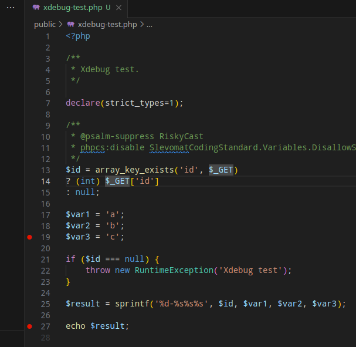
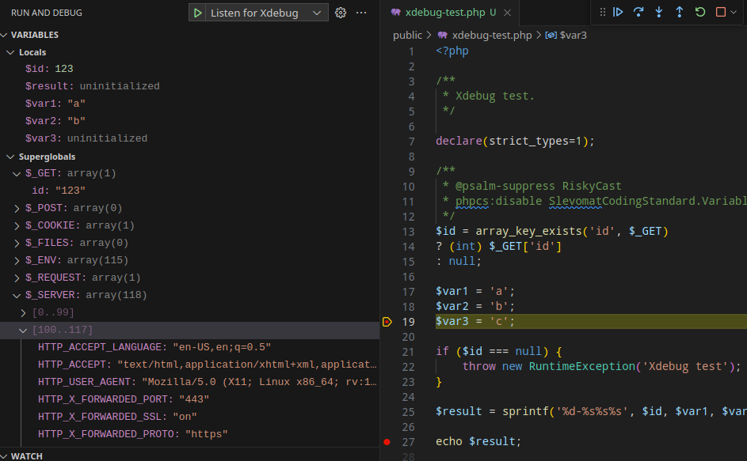
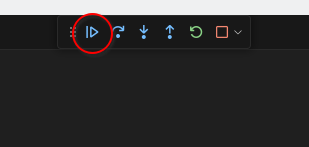
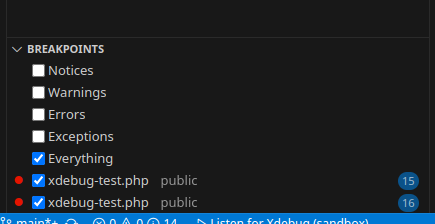

Xdebug + ddev + Visual Studio Code
About
This article is about using Step Debugging.
"Xdebug's step debugger allows you to interactively walk through your code to debug control flow and examine data structures."
Setup
.vscode/launch.json
{
// Custom xdebug configuration for Visual Studio Code + ddev
"version": "0.2.0",
"configurations": [
{
"name": "Listen for Xdebug",
"type": "php",
"request": "launch",
"port": 9003,
"pathMappings": {
"/var/www/html": "${workspaceRoot}"
}
}
]
}
Usage
Enable in ddev: ddev xdebug on.
Start debugging in vscode:
- Open "Run and Debug" (Ctrl+Shift+D)
- Start debugging: "Listen for Xdebug" (F5)

Test: public/xdebug-test.php
Add a breakpoint (click on the left of the line number) on the line with $var3, and another one on the line with the echo.

Navigate to the page xdebug-test.php:
- with parameter: https://sandbox.ddev.site/xdebug-test.php?id=123
- without parameter: https://sandbox.ddev.site/xdebug-test.php
Page loading is paused and the editor should now be in focus.
Go to vscode, some data should appear in the "Run and Debug" section.

Note: $var3 is not initialized because the break happens before the line is processed.
By clicking "Continue" we can go to the next breakpoint.

Now also $var3 has a value.
Notes
- Breakpoints will be added before the next line with code (if adding on a blank line, it will be moved);
- To debug also any errors that happen during execution (even if caught): Breakpoints > Everything. 
- To stop debugging:
- vscode: red square button (Shift+F5)
- ddev:
ddev xdebug off